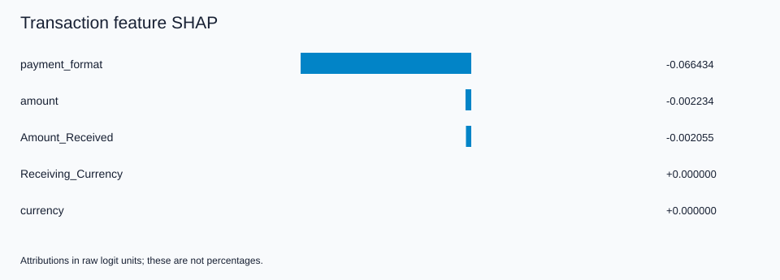
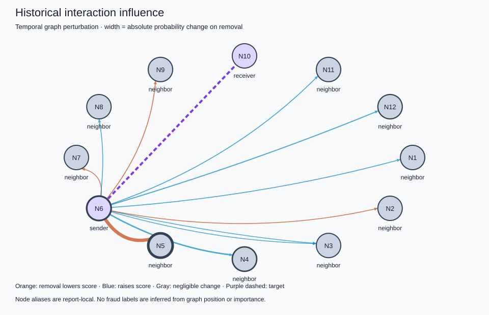

============================================================
TRANSACTION XAI
============================================================
Transaction: 89367
Bank: Citi
MODEL PREDICTION
Fraud model score (uncalibrated): 0.333707543
Prediction: FRAUD (threshold 0.309304938)
PREDICTION PARITY
Existing evaluation: 0.333707541
XAI: 0.333707543
FEATURE CONTRIBUTIONS (raw logit units)
1. payment_format = Debit Non-Prepaid -0.066434
2. amount = 4.12 -0.002234
3. Amount_Received = 4.12 -0.002055
4. Receiving_Currency = USD +0.000000
5. currency = USD +0.000000
TEMPORAL EVIDENCE
Recent completed batches examined: 8
Events involving sender/receiver in that window: 15
Time since sender's last recorded event: 22510.0 seconds
Time since receiver's last recorded event: None seconds
Window volume by currency: {'USD': 1398.7099999999998}
IMPORTANT HISTORICAL INTERACTIONS
Event 89366: delta probability on removal = -0.021900738
Event 89363: delta probability on removal = +0.005389812
Event 89364: delta probability on removal = +0.002012841
Event 89354: delta probability on removal = +0.000867712
Event 89355: delta probability on removal = -0.000783158
Event 89362: delta probability on removal = +0.000694308
Event 89361: delta probability on removal = +0.000422928
Event 89356: delta probability on removal = -0.000212861
Event 89357: delta probability on removal = -0.000142109
Event 89358: delta probability on removal = +0.000052404
Event 89360: delta probability on removal = +0.000052378
GRAPH EVIDENCE
Evaluated historical edges: 11
Nodes represented, including target endpoints: 12
Method: temporal graph perturbation (not GNNExplainer)
INTERPRETATION
payment_format contributed negatively relative to the sampled training reference, with account memory fixed.
amount contributed negatively relative to the sampled training reference, with account memory fixed.
Amount_Received contributed negatively relative to the sampled training reference, with account memory fixed.
Suppressing the most influential tested historical event changed the score by -0.021900738.
Temporal counts and volumes describe observed history; they are not independently attributed model features.
This explanation describes model behavior and does not establish that the transaction is actually fraudulent.
FIDELITY / STABILITY
Retained-window-subgraph absolute score error: 0.001432949
Background-resampling top-feature Jaccard: 1.0
LIMITATIONS
Model explanations do not establish fraud or causality; scores are uncalibrated.
Feature SHAP holds account memory fixed; static node-feature attribution is not implemented.
Temporal graph perturbation is a bounded replay intervention, not GNNExplainer. Earlier anchor memory remains intact.
Interventional SHAP hybrids can be unrealistic for correlated fields; exactness is relative to the sampled background.
Legacy preprocessing reproduces current original evaluation and saved metrics; original fitted objects were not preserved.
The original fixed-size batching and timestamp-tie behavior are preserved.
No combined federated-continual checkpoint or formal differential privacy is implemented.
============================================================